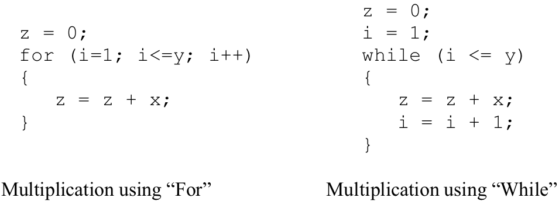

In addition to implementing selection structures, COMPARE, BRANCH, and JUMP can be used (along with statement labels) to implement high-level repetition constructs such as “while” and “for” loops. A template for writing the assembly language version of the high-level “while” construct is presented in .
As you may recall from your study of Watson JavaScript, the semantics of the “while” construct involve first testing the loop condition to determine whether it is true or false. If the condition is “false” the loop should be exited immediately (i.e., control should be transferred to the statement immediately following the loop construct). If the condition is “true” the body of the loop should be executed once. Following execution of the loop body, control returns to the top of the loop where the loop condition is tested once again and this process repeats itself until the loop condition becomes “false”.
The assembly language version of the “while” loop implements the semantics of the high-level construct in a straightforward way. Two statement labels are used: one at the top of the loop and one immediately following the loop. As with the assembly language version of the high-level “if” construct, two registers are loaded with the values to be tested.
(a) Template for constructing assembly language version of “while” loop
(b) Exit condition substitutions used in above templates
General template for implementing the “While” construct in assembly
Following the two LOAD instructions, a COMPARE statement examines the values held in those registers. A BRANCH statement, which contains the loop’s “exit condition”, is then executed. If the exit condition is true, control is transferred to the assembly language statement immediately following the loop. Otherwise, the exit condition is false, so control flows sequentially into the assembly statements that represent the body of the loop. At the end of the loop body, an unconditional JUMP instruction is used to return control back to the top of the loop where the condition can be tested again.
Note that the loop exit condition used at the assembly level is the exact opposite of the condition used in the high-level while statement. This is because the high-level condition specifies the conditions under which the program should continue to loop, while the assembly condition specifies the conditions under which the program should exit the loop. Thus, if the high-level code specifies that a loop should execute while A == B (while A is equal to B), the assembly language code would capture the same meaning by specifying that the loop should be exited when A NE B (when A is not equal to B).
presents an assembly language program that includes a “while” loop. The purpose of the program is to implement the high-level multiplication statement:
z = x * y;
You may have noticed that Watson Assembly Language does not include a multiply instruction. How then can multiplication be performed at the assembly level? One way that multiplication can be implemented is by repeatedly adding the value of the first operand to an initially zero product for some number of times equal to the second operand.[3] In the specific example given above, the first operand, “x”, is added to an initially zero product, “z”, “y” times. This “multiplication via repeated addition” algorithm can be expressed in high-level Watson JavaScript code using either a “for” loop, such as:
Or an equivalent “while” loop:
High-level Language Statement:
z = x * y;
Implementing multiplication of positive integers via repeated additions:
Assembly language version of the statement: z = x * y;
Note that this particular multiplication procedure requires that the second operand be non-negative. There exist straightforward extensions to this algorithm that allow for the multiplication of negative integers.
The assembly language program presented in implements its “while” loop directly from the template of . Assignment statements are implemented in a manner similar to that presented in . In this example, the assembly language implementation of each high-level instruction begins by copying the values of all operand variables from memory into registers. The contents of the registers are then manipulated in accordance with the meaning of the high-level instruction, and results are immediately copied from the registers back to the underlying main memory variables. As such, the resulting assembly language program, while correct, is not very efficient.
presents an optimized version of the program of . While an inspection of the two programs should reveal that they compute identical results, the program of involves fewer steps (17 verses 22) and therefore should run somewhat faster. The approach taken in the optimized version of the program is to keep temporary results in CPU registers rather than writing them back to main memory after each operation. This approach works by loading the initial values of the variables into registers at the beginning of the program, using those registers in place of the underlying variables during processing, and then copying results back to main memory at the end of the program. Frequently, compilers, the programs that translate high-level language programs into low-level code, use strategies such as this to produce code that is more efficient than would be produced by a literal, statement-by-statement translation of the high-level program.
Optimized assembly version of: z = x * y;
Exercises for
Z = X / Y;
using repeated subtraction, where X, Y, and Z are positive integers.Write an assembly language program to compute the sum of the numbers from 1 to 20 using a loop construct.
Footnotes
[3] There are other, more efficient, ways of solving this problem that will become apparent during the discussion of data representation and manipulation in .